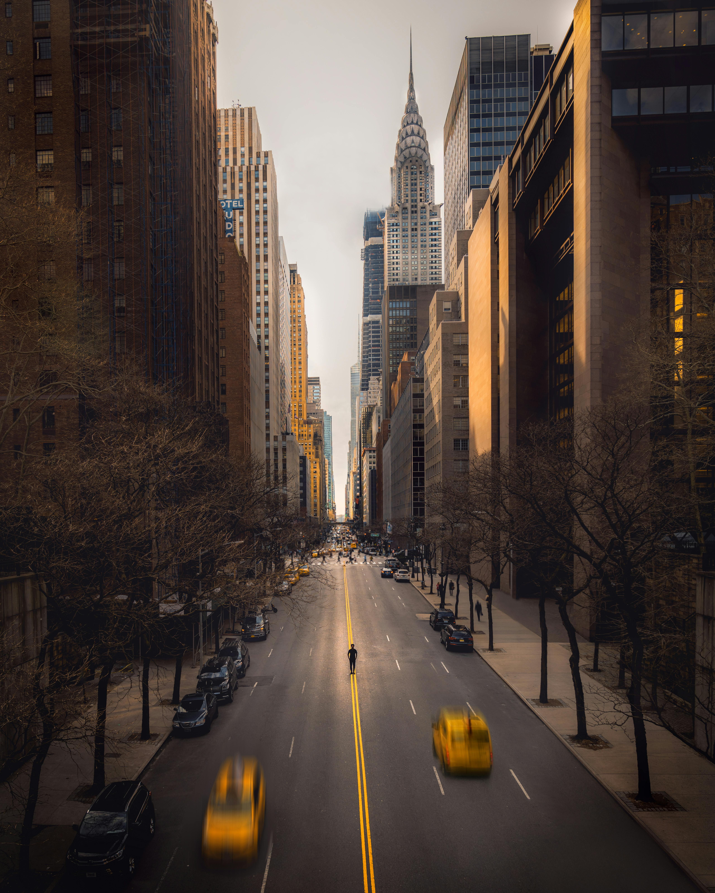
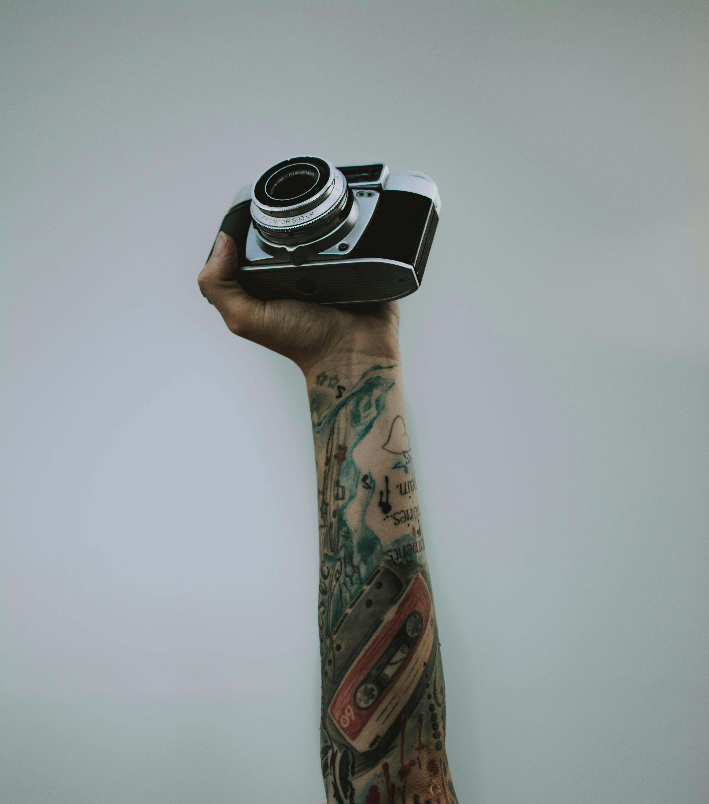
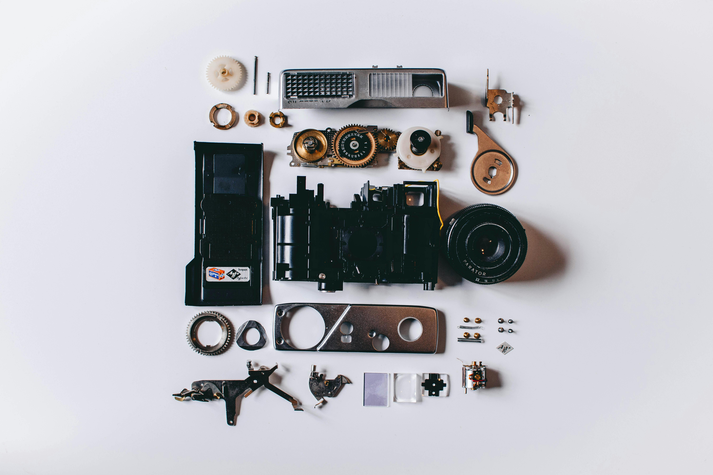

What
I enjoy instant photography because it helps me notice details that I usually miss. I like taking pictures of places, small objects, and moments that feel special.
My favorite style is simple and clean photos. I try to focus on lighting and the main subject instead of adding too many things.
- I enjoy saving memories in a physical form.
- I like the soft and nostalgic look of instant photos.
- I enjoy photographing travel, friends, and small details.
AI prompt used: “photorealistic photo of an instant camera on a desk with soft lighting, warm tones, clean composition”
Who
My name is Mayar, and I like instant photography as a creative break from coding and studying. It gives me a way to enjoy small moments and keep them in a real printed form.
I enjoy taking instant photos when I travel or when I walk around campus and Charlotte. It feels more personal because the photo comes out right away.
- Students can enjoy it as a fun hobby.
- Travelers can use it to save memories.
- Creative people can enjoy the artistic side of it.

AI prompt used: “photorealistic street photo, soft background blur, natural light, calm mood, instant photography style”
When
The best time for instant photography is usually golden hour, right after sunrise or before sunset. The light looks softer and warmer, which makes photos look more beautiful.
Cloudy days can also be great because the lighting is softer and shadows are not harsh. This helps the photo look balanced and clear.
- Sunset gives warm and soft colors.
- Morning light makes photos look fresh and calm.
- Cloudy weather helps avoid harsh shadows.
AI prompt used: “photorealistic sunset scene, warm glow, soft clouds, peaceful atmosphere, instant photo look”
Where
I like taking instant photos in parks, on campus, and in city areas with interesting buildings. These places give me different backgrounds and moods.
Sometimes the best spots are simple places like a coffee shop, a walkway, or a quiet street. Small places can still make beautiful photos.
- Parks are great for natural light and greenery.
- Campus has many nice study and walking areas.
- City streets add texture and character to photos.

AI prompt used: “photorealistic city street photo, interesting buildings, natural lighting, instant film style”
How
I start by choosing a subject, then I try different angles and distance. I also pay attention to the background so the photo does not look too busy.
After that, I do small edits if needed, like cropping or adjusting brightness in digital copies. For instant photos, I mostly focus on taking the best shot from the start.
- Choose a clear subject first.
- Test different angles before taking the photo.
- Use natural light when possible.
AI prompt used: “photorealistic camera and laptop photo editing workspace, neat desk setup, soft light”
Why
Instant photography helps me keep memories, especially when I travel or experience something new. It feels special because I can hold the photo in my hand right away.
It also makes me feel proud when I capture a photo that looks clean and meaningful. Even simple photos can become important memories later.
- It helps me save memories in a real way.
- It makes everyday moments feel more special.
- It gives me a creative hobby outside of schoolwork.

AI prompt used: “photorealistic hands holding an instant camera, shallow depth of field, soft light”
AI Prompts
Below are the prompts I used to generate the placeholder images for this hobby site. I kept the images in a consistent photorealistic style.
I also used AI to help organize text, improve structure, and build the single-page layout with HTML, CSS, and JavaScript.
- “photorealistic photo of an instant camera on a desk with soft lighting, warm tones, clean composition”
- “photorealistic street photo, soft background blur, natural light, calm mood, instant photography style”
- “photorealistic sunset scene, warm glow, soft clouds, peaceful atmosphere, instant photo look”
- “photorealistic city street photo, interesting buildings, natural lighting, instant film style”
- “photorealistic camera and laptop photo editing workspace, neat desk setup, soft light”
- “photorealistic hands holding an instant camera, shallow depth of field, soft light”

AI prompt used: “photorealistic collage of instant camera gear, clean layout, soft shadows, warm color palette”